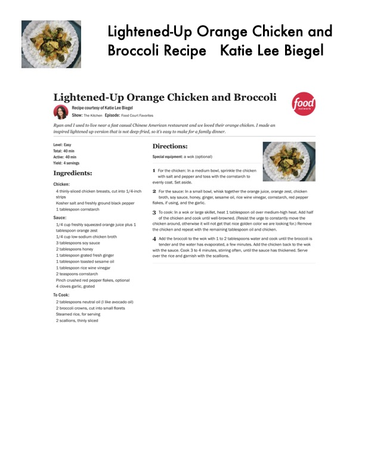

Lightened-Up Orange Chicken and

Original cookbook page 766
Ingredients
- Chicken:
- 4 thinly-sliced chicken breasts, cut into 1/4-inch
- strips
- Kosher salt and freshly ground black pepper
- 1 tablespoon cornstarch
- Sauce:
- 1/4 cup freshly squeezed orange juice plus 1
- tablespoon orange zest
- 1/4 cup low-sodium chicken broth
- 3 tablespoons soy sauce
- 2 tablespoons honey
- 1 tablespoon grated fresh ginger
- 1 tablespoon toasted sesame cil
- 'L tablespoon rice wine vinegar
- 2 teaspoons comstarch
- Pinch crushed red pepper fiakes, optional
- 4 cloves garlic, grated
- To Cook:
- 2 broccoli crowns, cut into small florets
- 2 scallions, thinly sliced
- ion that is not deep-fried, so it's easy to make for a family dinner.
Instructions
- Special equipment: wok (optional) '
- Forthe chicken: In a medium bowl, sprinkle the chicken with salt and pepper and toss with the comstarch to evenly coat. Set aside.
- For the sauce: In a small bowl, whisk together the orange jui broth, soy sauce, honey, ginger, sesame oll, rice wine vinegar flakes, if using, and the garlic.
- To cook: In a wok or large skillet, heat 1 tablespoon oil over r of the chicken and cook until well-browned. (Resist the urge chicken around, otherwise it will not get that nice golden color w the chicken and repeat with the remaining tablespoon oil and ct 4, Add the broccoli to the wok with 4 to 2 tablespoons water an tender and the water has evaporated, a few minutes. Add the with the sauce. Cook 3 to 4 minutes, stirring often, until the sau over the rice and garnish with the scallions.
Recipe #766 from collection